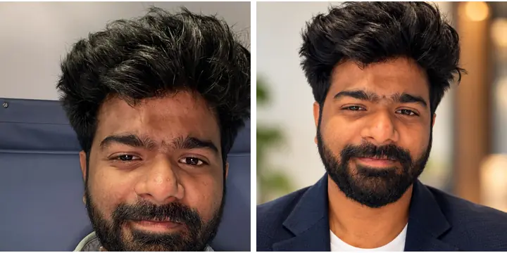
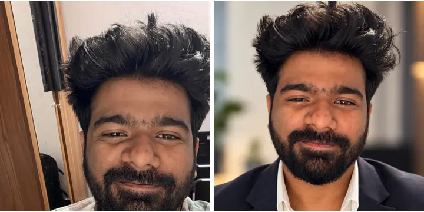

A professional LinkedIn DP from one selfie.
- Take a clear photo in good lightFace the window, look at the camera, no sunglasses
- Upload it to ChatGPTTap + → Photos → pick your photo
- Paste the prompt below and sendIt compares all 60 styles, picks the best one for your photo and makes your DP
The prompt
Read all 60 styles from this guide: https://raw.githubusercontent.com/unnikrishnan-nambiar/uk_speaks.ai/main/guides/linkedin-dp-60-prompts.md Analyze my uploaded photograph, focusing on facial visibility, lighting, pose, clothing, background, and image quality. Style selection rules: 1. Evaluate all 60 styles, not just career-specific ones. 2. Do not assume my profession or use previous conversations to influence selection. 3. Identify the five most suitable styles from different categories. 4. Compare them based on visual compatibility, professionalism, realism, and identity preservation. 5. Select the highest-scoring style, explaining why it beats the alternatives. 6. Do not automatically prefer Style #31 or any particular style. 7. Treat the selected style as the primary visual direction. Combine compatible clothing, lighting, or correction treatments when appropriate. Generate one photorealistic, high-resolution, square LinkedIn portrait. Preserve my recognizable facial identity, skin tone, hairstyle, beard, and distinctive features. Avoid excessive retouching. Ensure safe framing for LinkedIn’s circular crop. Before generating, briefly state the selected style number, its name, and why it was chosen. If the guide is inaccessible, tell me rather than inventing its contents.
Want a specific look? Add this
I work as a [your job, e.g. software engineer / teacher / sales manager]. Use a style from the guide that fits this job.
Example · same face, new DP


Need help? Full steps
Step 1: Pick the right photo
The better your photo, the more it looks like you. Use one where your face is clear and fully visible: stand facing a window in daylight, hold the phone at eye level, and look at the camera. Avoid sunglasses, caps, heavy filters, group photos and dark rooms.
Step 2: Upload it to ChatGPT
Open the ChatGPT app, start a new chat, tap + → Photos and pick your photo. Image creation on the free plan has limits, so if it says you've hit the limit, try again later.
Step 3: Paste the prompt and send
Copy The prompt above, paste it with your photo and send. ChatGPT reads all 60 styles, checks your photo, shortlists 5, tells you which style it picked and why, then makes your DP. It can take about a minute.
Step 4: Check it still looks like you
Put the new DP next to your original. Check your eyes, nose, smile, hairline, beard and skin tone. If anything changed, reply: “Keep my face exactly as in my photo. Only change the background, outfit and lighting.” Want a different look? Reply with a style number, like “Use style 08”.
Step 5: Set it as your DP
Tap and hold the image to save it. On LinkedIn, tap your photo → Edit → upload, and keep your head in the middle of the circle. Use the same DP on WhatsApp and your CV for a matching look.
The 60 styles, in 6 groups
- Studio & corporate: grey, white or beige studio, classic corporate.
- Office & workplace: real office backgrounds.
- Outdoor & natural light: soft daylight outside.
- Career-specific: looks matched to your job.
- Clothing & expression: blazer, smart casual, a friendly smile.
- Photo fixes: cleans up dark, tilted, noisy or cluttered photos.
Keep it honest
- Your DP should look like you on a video call. Recruiters notice when it doesn't.
- Don't change your age, face shape or skin tone. The prompt already tells ChatGPT not to.
- Only upload your own photo, never someone else's.
- Prompt not copying inside Instagram? Tap ••• and open this page in your browser.